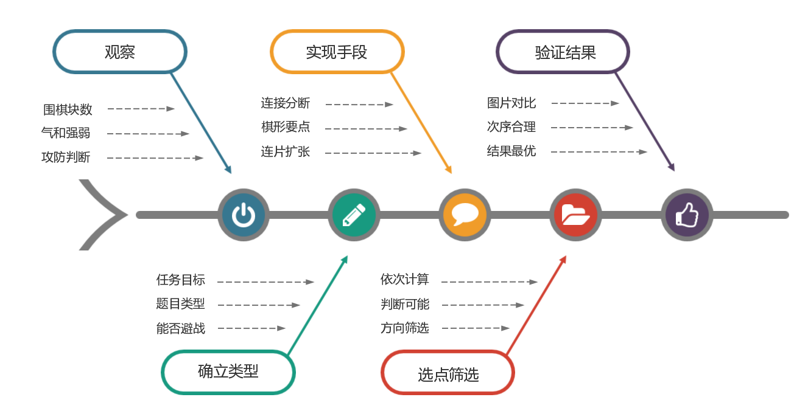

2026 下半年 · 分享课表
我叫萝卜干。这些年，我做的事情就一件——把围棋这件事讲清楚：让普通孩子学得进去、家长教得明白、老师上得轻松。
我画过一张全国围棋机构都在用的思维导图——把围棋教学的逻辑结构整理出来，让教学不再依赖个人天赋。
我也写过 4 本围棋教育手册（教师 / 校长 / 家长成长 / 家庭教育），把这些年踩过的坑、想明白的事，留在纸上。
在以下平台分享日常：
抖音 / 视频号 / B 站 · 萝卜干聊围棋教育
备课没思路、孩子不爱听、家长不理解、续费总卡壳——
把教学逻辑梳清楚，把和家长的沟通话术做扎实，上课轻松，留人不难。
招生靠口碑、续费靠服务、老师靠成长——
一个人也能干，三个人也能管。把小机构的运营底盘搭起来，把人留下来。
孩子学不进去、不爱下棋、输了就哭、考级焦虑——
不是棋的问题，是陪伴方式的问题。用对方法，围棋会成为最好的亲子项目。
所有项目均长期开放，加微信咨询入群方式。
长期开放
教师系统性能力训练营。每期围绕一个核心专题，集中打磨备课逻辑、课堂节奏、家长沟通、续班话术。适合刚入行 1-3 年的老师，以及想告别野路子教学的独立老师。
每周四 · 长期
面向萝卜围棋圈成员的每周体系化分享。本季度主题：围棋老师如何做好自媒体；下季度主题：家校沟通与招生宣传。每期一个小切口，长期滚动更新。
每周三 / 周四早 · 长期
以《围棋教师成长手册》为主干，二十次课系统串讲从教学理念到课堂落地的全流程。每次课配套课程回放、教学笔记、教学 PPT，加入即可反复复用。
长期开放 · 按专题排课
面向野狐 10 级到 3 段棋友的专项训练营，四大模块——围棋布局、中盘战斗、打入专题、官子提升，按专题轮转，逐一打透实战短板。
长期开放
面向少儿围棋家长的长期交流群。日常围绕孩子学棋进度、家中陪练、升级冲段节奏、赛事信息展开。每周一次固定分享教育心得，无广告、无强制打卡。
长期开放 · 预约制
针对个体棋友的深度陪跑。集中解决卡段瓶颈、思维盲点、赛前突击等具体问题。每次 45 分钟，面向 5 岁到成人，可试听一次再决定是否长期。
长期开放 · 按专题排期
面向孩子的短期专项训练营。围绕死活手筋、布局感觉、吃子技巧、基本官子四大专题轮转开营，每期 6-8 次课，适合 15 级到 3 级的孩子按短板选营。
这几年沉淀下来的两件事：一套家校共育四书，一份2025 版围棋思维导图。都还在持续打磨。
围绕围棋教育与家庭教育写成的四卷手册，分别面向老师、校长、家长与家庭日常。
写给每一位认真的围棋老师，从教学理念到课堂落地的系统方法。
写给同行校长的一本书，聊招生、教研、留存与团队的实际做法。
陪孩子学棋的家长真心话，把家长最容易踩的坑一次讲清楚。
用一盘棋，养出会思考的孩子——把围棋当成家庭教育的一面镜子。
从教学体系、启蒙入门、棋力提升到家庭教育，把这些年琢磨出来的东西画成一张张图。点击可放大查看。
四千年，围棋不是一门游戏，而是一整套东方哲学。这里从四个门推开看：历史、故事、典籍、人物。持续更新，慢慢挖。
壹 · 时间
从上古神话走来，围棋在中国活了五千年。走一遍它的时间线。
0 篇 · 点击进入 →
贰 · 记忆
五千年里，围棋不只是棋，它是无数故事的容器。挑几个我常讲的。
0 则 · 点击进入 →
叁 · 传承
两千年来中国人为围棋写过的书，浩如烟海。挑几本最重要的说说。
0 部 · 点击进入 →
肆 · 人物
把围棋推向今天的，是一批批具体的人。他们的故事比棋谱更精彩。
0 位 · 点击进入 →
本栏目会持续更新，之后会加入更多典故、名局解读与围棋礼仪。有想让我讲的题目，欢迎去留言板留言。
这些文字是我多年在教学一线沉淀下来的教学思路和方法论。分为三个方面：怎么把围棋技术教给刚开始学棋的孩子、多年上课积累的一些案例，以及新入行的老师如何规划自己的围棋生涯、实现稳步成长。
围棋练习，"做得多"未必有效，"做得对"才是关键。这份小册子把多年在教学一线积累下来的 练棋建议整理成 6 条基础注意事项 + 4 个可以互动的小工具， 希望能给家长、学员和新入行的老师，一份可以温和照做的参考。

陪孩子学围棋的这几年，不是匀速前进的——它会经过三个味道完全不一样的阶段。这份建议摘自《围棋家长成长手册》第三章，把启蒙期、级位期、段位期一段一段拆开讲，希望能给每一位陪孩子走这条路的家长，一份可以温和照做的参考。
孩子学围棋的这几年，棋盘上的内容在变，孩子的脑子在变，您要扮演的角色也得跟着变。
最常见的错位，是孩子已经走到第二阶段，家长还停留在第一阶段的"我陪着你玩"；或者孩子才在第一阶段，家长已经按第三阶段的"该自己独立思考"在要求他。前一种会让孩子觉得家长太黏太轻飘飘，后一种会把孩子推到一个他接不住的位置。
下面按三个阶段 × 五个板块展开：这个阶段的孩子是什么样、您可以怎么做、内向和外向孩子分别怎么处理、小提醒、以及李老师和萝卜老师在这个阶段最想对家长说的话。
5~7 岁，以具体形象思维为主，听不懂"势"，但对"小怪兽被吃掉"这种拟人化说法理解力惊人。单次有效注意力 5~10 分钟，中间走神是正常的。会反复忘掉规则、赢了就乐疯输了就大哭，也会突然蹦出一句让您惊呆的话。请先放心：这不是您家孩子的问题，是这个年纪本来就这样。
同样一句话、同样一道题，对内向和外向孩子要换两种用法。
课上不举手不代表没听懂，是处理速度慢半拍。回家重做不重讲——直接把题摆出来让他自己再摆一次。出门前 20 分钟预告"我们要去围棋课了"，别在棋室门口逼他和老师同学打招呼。赢棋以后在车里、家里夸，不要当众大声夸——他会退缩。
课上举手最积极、讲得最热闹，但享受的是"被看见"不是"想明白"。落子前加一个深呼吸小仪式，每盘棋后让他当小老师讲一遍。家庭围棋日刻意给他设计"表演环节"（给爷爷奶奶演示怎么吃子），舞台需求被满足了，他在课上就不会用插嘴抢答去抢老师的注意力。
启蒙期的家长其实只要做一件事——让孩子下完课走出教室的时候，是笑着的。剩下的，慢慢来都来得及。—— 李老师
启蒙期最重要的，不是孩子学会了多少规则，是他在围棋这件事上，找到了一个"我说了算"的感觉。—— 萝卜老师手记
8~10 岁，开始具备 2~3 步逻辑推理，能听懂"气""目""厚薄"，但要在具体棋形上才反应过来。单次注意力 15~25 分钟。开始有"我的棋风"——爱屠龙、爱围空、爱搅劫。会输给比自己弱的孩子并因此崩溃。段位不涨是家长的头号焦虑——这是整个学棋路上最长、最磨人的一段。
级位期是内向和外向孩子分化最明显的阶段，家长要用完全不同的方式来陪。
警惕"内伤型情绪"——输了不哭不闹，回家自己默默不说话，情绪压在心里没散掉。主动给他"非语言陪伴"的出口：散步、买冰棒、聊棋以外的事，比追问"你怎么了"有用得多。请老师多排"够一够能赢"的对手，少排"能轻松赢"的。赛前一周降低压力，不再加练。
警惕"虚高的自我评价"——讲得自信但不一定真懂，网棋胜率比线下高一大截。每天网棋不超过 2 局（即使他求着还要下）；每盘复盘让他自己说，他说着说着会自己发现"这手没想清楚"。赛前一周反而要保持"还在练"的紧张感，完全歇着他会手生。
段位是结果，能力是因。您天天浇水的应该是根，不是天天去看花开了没。—— 李老师
级位期的家长，往往不是做得太少，是话太多。把一些话憋回去，比说出来更有用。—— 萝卜老师手记
10~14 岁，抽象推理 + 全局视野初步具备，能听懂"味道""效率""急所"并主动应用。单次注意力 45 分钟~2 小时。开始有自己的棋观，会反驳您、反驳老师。也开始出现半年到一年的高原期。学业和围棋的平衡是段位期的头号焦虑。段位阶段是孩子是否会"终身保留围棋"的分水岭。
段位期的孩子已经会藏心事，家长最重要的能力是"读懂他不说的话"。
心里有很多话但不说——对棋、对老师、对家长都有判断，却全憋着。学会读非语言信号：突然不愿意去棋室、比赛回来不说话，都可能不是您以为的原因。少问、多陪，用散步、开车、睡前关灯这些低压力场合等他自己开口。主动问他研究的定式（"那个定式最近研究得怎么样了"），比问十句"今天怎么样"都管用——他要的是"被认真对待"。
自信和自我怀疑反复横跳——今天觉得马上冲段，明天觉得不是这块料。您要当"稳定的低音线"：他嗨时您不跟着嗨过头，他塌时您不跟着塌下来。青春期社交圈会挤占练棋时间，不要指责"你怎么现在都不学了"——帮他在围棋圈里建立同龄人社交，一起下棋、报队赛，让围棋也变成"和朋友一起做的事"。
段位期的家长，真正的本事不是"陪着孩子学"，是"问出孩子的真实想法，并且尊重它"。这是孩子能在围棋这条路上走远的根本。—— 萝卜老师手记
下一次拿不准"现在该用哪种姿态"的时候，可以一眼扫过去对照。
| 维度 | 启蒙期 | 级位期 | 段位期 |
|---|---|---|---|
| 关键词 | 玩中学，守护兴趣 | 耐心引导，培养习惯 | 支持与放手，见证成长 |
| 典型年龄 | 5~7 岁 | 8~10 岁 | 10~14 岁 |
| 思维特征 | 具体形象思维 | 初步逻辑推理（2~3 步） | 抽象推理 + 全局视野 |
| 单次注意力 | 5~10 分钟 | 15~25 分钟 | 45 分钟 ~ 2 小时 |
| 典型节奏 | 单课 10~15 分钟"游戏" | 每天 15 分钟死活题 | 自主练习 + 自主打谱 |
| 家长头号焦虑 | "他怎么学得比别人慢" | 段位停滞 | 学业 vs 围棋如何平衡 |
| 家长该做 | 配合 + 童话 + 鼓励过程 | 陪练 + 复盘三句话 + 读懂停滞 | 后勤 + 边界 + 24 小时缓冲 |
| 最忌讳 | 灌输抽象概念 / 过早段位赛 | 把段位变成家庭 KPI | 继续用级位期方式介入 |
| 与老师沟通 | 两周一次问"陪练什么" | 每月一次问"卡在哪、原因" | 关键节点深谈（专业 / 阶段调整） |
| 比赛跟队 | 全程陪 | 全程陪但坐在视线之外 | 按需跟（早送晚接） |
| 复盘方式 | 不强制复盘 | 复盘三句话 | 赛后 24 小时再开口 |
| 内向孩子 | 重做不重讲 / 出门 20 分钟预告 | 安全出口 / 排"够一够"的对手 | 少问多陪 / 散步车上聊 |
| 外向孩子 | 慢仪式 / 设"表演环节" | 控网棋时长 / 让他自己复盘 | 当稳定的低音线 / 建围棋同龄人圈 |
如果把三个阶段画成一条线，家长角色其实是这样变化的。
| 阶段 | 家长角色 | 一句话姿态 |
|---|---|---|
| 启蒙期 | 玩伴 | 他玩，您也玩 |
| 级位期 | 陪练员 + 情绪容器 | 他练，您陪；他哭，您接 |
| 段位期 | 观众 + 后勤 | 他下，您看；他比赛，您备好早餐 |
这三个角色之间没有明确的分界线。最聪明的家长，是会在孩子还在级位期的时候，就开始预演段位期的姿态——稍微往后退一步、稍微少说一句、稍微多忍一忍。这种"提前一步退场"的智慧，让孩子在每一个阶段的过渡上，都走得比同龄人更顺。
愿您在三个阶段都找到自己舒服的位置。愿您和孩子，在每一个阶段，都笑得出来。
—— 摘编自《围棋家长成长手册》第三章 · 萝卜老师教学思路会持续沉淀，教学故事也会不断更新。想看什么话题，欢迎去留言板留言。
三档十工具，把这些年一线沉淀的招生 SOP、家长沟通话术、学棋常识、六商教育、SGF 打谱器—— 全部落到可复制、可打印、可直接用的形态。老师、校长、家长各取所需。
把家长最常问、最容易让老师踩坑的 20 个高频问题，拆成"承接情绪 → 换视角 → 给行动"三层话术。适用于试听后、日常交流、季度复盘等场景。
学情反馈单是把孩子的六边形能力雷达、八项软性素养、老师观察和下阶段计划做成一张可导出、可发家长的图表。
本工具已作为教师模块常驻在教学理念板块的模块 F。点击下方按钮打开教学理念，然后拉到"学情反馈单"章节即可使用。
孩子学到什么水平了？家长最常问的问题之一。这里给出中国业余段级位、日本院生、韩国研究生、AlphaGo Zero 等级分的对照关系，方便老师跟家长解释。
| 阶段 | 中国段级位 | 典型能力表现 | 常见学时 |
|---|---|---|---|
| 启蒙 | 25 级 - 20 级 | 认识棋盘、气和目、简单吃子 | 1-3 个月 |
| 19 级 - 15 级 | 了解基本手筋、能围小空 | 3-6 个月 | |
| 14 级 - 10 级 | 会做眼、能下完整一盘 13 路棋 | 6-10 个月 | |
| 入门 | 9 级 - 5 级 | 能下完整 19 路棋、简单死活 | 10-16 个月 |
| 4 级 - 1 级 | 掌握基本定式和布局、能复盘 | 16-24 个月 | |
| 业余段位 | 业余 1 段 | 系统性理解棋理，能读几手 | 2-3 年 |
| 业余 2-3 段 | 基本功扎实，参加地区级比赛 | 3-5 年 | |
| 业余 4-5 段 | 省市顶尖水平，冲段班孩子的目标 | 5-8 年 | |
| 业余 6-7 段 | 全国业余顶尖，可挑战职业初段 | 8 年以上 |
| 中国业余 | 日本业余 | 韩国业余 | AlphaGo Zero 等级分 |
|---|---|---|---|
| 业余 1 段 | 业余 2 段 | 业余 2 段 | 1500-1700 |
| 业余 3 段 | 业余 4 段 | 业余 4 段 | 1800-2000 |
| 业余 5 段 | 业余 6 段 | 业余 6 段 | 2100-2300 |
| 业余 7 段 | 业余 8 段 | 业余 8 段（韩国最高） | 2400-2600 |
日韩业余段位起始点比中国低约 1-2 段，但顶级业余水平三国大致一致。
| 职业段位 | 获得方式 | 典型年龄 |
|---|---|---|
| 职业初段 | 参加定段赛，全国每年约 20-25 人入段 | 10-16 岁 |
| 职业 2-5 段 | 参加职业比赛按积分升段 | 入段后 2-5 年 |
| 职业 6-8 段 | 获得高水平职业比赛冠军或积分累积 | 顶尖棋手 |
| 职业 9 段 | 获得世界大赛冠军或最高级别比赛冠军 | 棋手最高荣誉 |
每周一到两条朋友圈，是家长看到你、判断你、信任你的关键窗口。这里给出 10 类朋友圈模板，每类一个例子，直接改数字和名字就能发。
📖 今天带孩子们做的死活题
黑先，标准做眼手筋 · 二线夹是关键
你能三分钟内看出答案吗？
——你的孩子已经能一分钟做完这道题
[配图：手写棋谱 + 孩子做题的手（打码）]
🌱 三个月前，他连棋盘都看不清
今天，他自己下完了完整一盘 19 路
黑棋 · 11 岁 · 第一次执黑独立下完全盘
下一个目标：布局稳到能读三手
[配图：孩子背影 + 棋盘复盘图]
🏆 恭喜 X 同学正式获得业余 1 段
距他第一次摸棋 · 22 个月
比预期慢半年，但每一步都稳
段位是路牌不是终点，下一段路我们继续走
[配图：证书正面 + 孩子和证书合影（打码）]
💭 备课时的一点想法：
"孩子学不下去"这件事，90% 不是他的问题
是他家里/学校/机构，有一个环节出了错
围棋从来不是天赋游戏，是环境游戏
[配图：手写笔记 · 教研本]
🎯 本周试听排期还剩 3 个名额
适合：5-10 岁 · 从未接触过围棋
不适合：家长希望半年拿 1 段的
试听费用 XX，报名后抵扣
私信"试听 + 孩子年龄"预约
[配图：教室环境 · 干净整洁角落]
👥 一位学了 8 个月的孩子家长给我发了这段话：
"孩子最近做作业能坐住一小时了
以前十分钟就坐不住
我觉得围棋比补习班值多了"
——这是我做这一行最想听到的话
[配图：微信截图打码 · 只留文字]
⚡ 最近很多机构在打"AI 陪练包学包会"
我一直没跟风，也不打算跟
围棋是人和人的博弈
AI 是训练工具，不是老师替身
让孩子对着屏幕下棋一年
不如让他跟活人下三个月
——这是我的坚持，不打折
[配图：纯文字白底]
📚 本周推荐 · 家长入门可以翻的一本书
《一手交给孩子 · 家长学围棋的最少必要知识》
（我自己整理的家长版启蒙手册）
不用学下棋，只需要看懂两个词：
1. 什么是"气"
2. 什么是"目"
私信"家长入门"送电子版
[配图：书封面]
☕ 下午 4 点
上一节课刚结束，下一节课还有 20 分钟
翻翻《棋魂》放松一下
——教了十几年围棋，还是最爱这种时刻
[配图：桌面 + 咖啡 + 书 · 温暖光线]
🎋 端午安康
今天我们不上课
所有孩子的作业：陪家里人吃一顿饭
围棋能教的东西很多
最重要的一件是：知道什么时候该收手
[配图：粽子 + 棋盘 · 静物]
试听课的本质不是讲课，是让家长在 45 分钟里把"陌生"换成"信任"。这套 SOP 把试听拆成 8 个环节，每一步都问自己：这一步是在讲围棋，还是在搭信任？
试听课不是教学课，是信任课。家长记不住老师讲了什么棋形，他记得住老师蹲下来跟孩子说话的样子。
硬指标：家长进门前 5 分钟前台应保持"随时接待"姿态，不做私事。
老师蹲下来的瞬间，胜过前台十句宣传语。
试听课的目标不是教会孩子什么，是让家长看到孩子对围棋有反应。老师全程要做到：
试听课不要展示老师有多牛，要展示孩子有多亮。家长看到的是孩子的表情，不是老师的功力。
课程结束后，老师必须做这件事：主动到家长面前，先蹲下拍拍孩子肩膀，然后跟家长说三句话（顺序不能反）：
不要在这时候提优惠。让家长觉得你在托付，不是在卖货。
老师离开后，咨询师和家长对话，不提"报名"两个字。分三种情况处理：
| 试听转化率 | 问题定位 | 优化方向 |
|---|---|---|
| < 30% | SOP 没跑通 or 环境有严重瑕疵 | 逐环节复盘 · 优先修 STEP 1 和 6 |
| 30% - 50% | SOP 跑通但老师"临门一脚"没做到 | 老师课后三句话专项训练 |
| 50% - 70% | 正常范围 · 稳定运营水平 | 持续打磨咨询师收尾话术 |
| > 70% | 优秀 · 但注意口碑积累和长期续费 | 转向续费率优化 |
试听后、咨询中、报名前、报名后、退费时，家长会用15 种典型说法来表达犹豫。这里给出每种情况的心态解读和应对话术。
10 个招生高频场景的完整话术，从首次陌拜到老带新，每段包含开场、推进、收尾三层。可直接口播，也可改成文字发朋友圈或群消息。
"您好，我是这里的围棋老师 XX。今天是我们试听开放日，孩子如果不忙可以来体验 30 分钟，没有任何压力。
（家长犹豫）您先看看环境，如果觉得合适再说。我们试听费 XX 元，报名可抵扣；不合适全额退，孩子多来玩一次也开心。
（家长同意）您先坐着喝杯水，我叫老师过来跟孩子打个招呼。"
"今天孩子表现比我预期还好——特别是他[某个具体动作]，一般孩子第一次做这个都要犹豫，他直接就落子了。
如果您觉得孩子跟老师投缘，可以先报一个体验期（10 节课），我们承诺 10 节课内您觉得不适应，全额退。
（家长犹豫）不用现在决定，您回去和孩子聊聊，看他想不想继续来。下周还有排期，您微信告诉我就行。"
"XX 家长，您在这已经一年多了，孩子进步大家都看在眼里。最近有几位新家长在打听老师，如果您身边有合适的朋友，愿意介绍的话可以推给他们。
不用您帮我推销，就说一句'我孩子在这里学得挺踏实'就够了。他们真来了，我给您和他都各加送 2 节课作为感谢。
（家长答应）也不用勉强，随缘就行。您孩子学得好，本身就是我最好的招牌。"
"📢 本周试听排期通知
时间：X 月 X 日 - X 日 · 下午 14:30 / 16:00 · 两个时段
适合：5-10 岁 · 从未接触围棋的孩子
本周还剩 X 个名额
体验流程：45 分钟试听 + 20 分钟老师反馈
预约：私信'试听 + 孩子年龄'即可"
"@全体成员 今天带孩子们做了一道死活题，很多人卡在'夹'这个手筋上——这个手筋是启蒙到入门的一个关键坎，家长可以在家陪孩子多摆几遍。
明天我把详细讲解发到群里。有问题的家长直接私信我。"
"（开场 · 站在展台前）家长您好，我是围棋老师 XX，今天在这里做公益围棋启蒙。孩子只要 5 岁以上，都可以来试试。
不需要报名不需要留电话，就来玩 20 分钟。孩子玩得开心，您觉得合适再考虑要不要来我们那试听。
（孩子来到棋盘前）你好呀，你叫什么名字？来，我教你怎么让棋子活起来——你看这颗小黑子，它现在被围住了，怎么救它？"
"（对幼儿园园长）X 老师，我不是来卖课的，我是想问下——您园里有没有对围棋感兴趣的孩子？我们可以来做一次公益围棋文化课，40 分钟，讲讲围棋是什么，不推销任何东西。
如果园里有需要，我们也可以做长期的兴趣班。这个不着急，您先看看孩子们反馈怎么样。"
"XX 家长，孩子这半年的学习报告我整理好了，回头发您。总结几句：他布局稳了很多，中盘还在拉；软性方面他抗挫能力明显进步，输棋不掉眼泪了。
下一阶段我们打算重点补中盘计算力，配合冲 X 级的目标。费用和之前一样，不涨价。
（家长犹豫）您先看报告，看完有想调整的地方跟我说。"
"XX 家长好久没聊了！孩子最近怎么样？我一直记得他那盘让二子的对局——那是我印象最深的一盘。
最近有想过让他回来练练手吗？没打算也没关系，我就是想问声好。孩子哪天想下棋，随时来我这坐坐，不用报名。"
"XX 家长，孩子最后一节课昨天上了，我这边帮您整理了他这段时间的完整档案：对局记录 XX 局、复盘笔记 XX 页、老师观察小结一份。
这份档案打包发您，新老师可以直接用。孩子后面路上有什么进展，您愿意的话跟我分享一下，我特别想知道他能走到哪。"
孩子学棋路上，家长最常问的 20 个问题——每个问题都给一段"实在回答 + 家长可以做的"。这是家长版工具，也可以打印给新家长做入门参考。
把"教育"拆成 六种商——智商、情商、逆商、德商、志商、健商。每种商配 4 个真实生活场景，写清"孩子表现 / 家长常见误区 / 建议怎么做"。让家长看到"教育"不是抽象的词。
写给段位期家长的开营指引。孩子的段位上不去、明明练了很多却不见涨，从来不是"练得不够"的问题——是训练的两个底层能力没被同步打造。这份指南把段位提升的核心逻辑拆开讲清楚，也告诉您：这套围棋思维如何原封不动搬到孩子的学科学习里去。全文约 8 分钟。
段位期的孩子最容易卡在一个位置：题也做了、棋也下了、老师课也听了，段位赛就是过不去。家长焦虑，孩子沮丧。真相往往不是"练得不够"，而是练的方式在原地打转。
这三个误区都不是知识层面的问题，是训练方式的问题。突破瓶颈的关键是告别单一训练模式，从思维、习惯、方法多维度同步提升，把零散的技巧转化为稳定的实战胜率。
段位提升需要同步打造两大核心能力，形成完整的提升闭环——缺一不可。这也是这次集训的整体设计逻辑。
段位提升的完整闭环是这样的：实战对局 → 暴露盲点 → 深度复盘 → 针对训练 → 认知升级 → 回到实战。这个环转起来，段位就开始动。转不起来，练多少年都在原地。
集训里我们会把每一步落子拆成八个动作。刚开始孩子会觉得"下棋没这么麻烦"——但两周训练下来，这套路径会内化成本能，每一步的决策质量都会跟着上一个台阶。
这八步不只是围棋的思维路径，它可以原样迁移到孩子做数学题、写作文、考场答题——这一点我们后面会展开讲。
这是这份指南最想让您看到的一部分。孩子花两周学围棋，如果只提升了棋力，那是浪费；真正的价值是把这套思维带回学校去。
七条里有超过 4 条能给自己打勾——这次集训您就已经准备好了。
如果集训结束时，孩子的段位没涨——不用焦虑。段位是一个滞后指标，通常在集训结束后的 2~3 个月才会体现。
但有几样东西，是您现在就能看到它有没有被建立起来：
这些才是集训真正在孩子身上留下的东西。段位是副产品，思维和习惯才是核心资产。
——摘编自《段位孩子成长指南 · 棋力学力双提升》· 围棋特训教研组 · 萝卜老师主讲
写给刚给孩子选围棋的家长——不懂棋没关系，先看清整条路。从 30 级到业余段位，一般要走 4-8 年。每个阶段孩子在学什么、您可以做什么、可能踩到哪些坑，一次讲清楚。
一线城市线下班：150-300 元/课时；
二三线城市：60-150 元/课时；
网校启蒙班：30-80 元/课时。
建议先买 12-20 课时的启蒙包课试试，别一开始就压年卡。
一线线下：200-400 元/课时（含线上练习课）；
二三线：80-200 元/课时。
建议每周 1-2 次课 + 每日 15 分钟死活题。
装备一次性投入：落地棋盘 200-600 元 + 死活题册 50-100 元。
线下集训班：300-600 元/课时；
网校提高班：50-150 元/课时；
首次参加正式比赛：单场报名 100-300 元 + 差旅。
这个阶段可以开始接触 AI 复盘工具，请老师推荐即可。
冲段周末班：500-1500 元/月；
一对一陪练 / 复盘：150-500 元/小时；
全年围棋总开销，一线城市家庭常见在 1.5-4 万元之间，地区差异较大，量力而行。
高段位专项班：800-2500 元/月；
省级 / 全国青少年赛事：单次 2000-8000 元（含差旅）。
到这个阶段，围棋支出往往和其他兴趣班拉开距离，需要家庭做长期规划。
极少数孩子会走上定段道路。需要脱产训练、进入职业道场，投入以年为单位、代价极大。到这里，一切决策都会围绕"孩子自己是否真心愿意"展开。
绝大多数孩子走的是这条。围棋成为一项终身兴趣：偶尔下几局、参加业余赛、给下一代传棋。这条路一样值得骄傲。
最后，请记得——段位不是终点，看到孩子的努力过程比获得证书更重要。
如果有一天孩子想暂时停下，不妨支持他的选择，并告诉他：
"围棋永远在这里等你回来。"
面向已合作的老师、机构和家长开放的会员板块。这里存放的是围棋启蒙阶段最实用的教师成长资料、课堂把控经验、游戏化教法与围棋故事——需要账号 + 密码才能进入。
未获得账号？请通过微信 yxwq0909联系萝卜干老师申请。
登录后 30 天内自动免登，可在"退出登录"或清除浏览器缓存后重置。
围棋教育里，最难的不是技术，是"人"这一面。这里两套 30 题自评，帮你把自己在孩子学棋 / 教学状态里的位置照一照镜子。做完会给你一张段位认证证书，可以保存分享。
这套题面向孩子在学围棋、正在学、或者考虑让孩子学的家长。它不测围棋水平，测的是你作为家长的教育理念、期望管理、陪伴方式、教育视野四个维度。
提示：本测评为萝卜干个人教育理念评估工具，结果和证书代表教育认知度参考，不代表围棋段位。
围棋教学配套的思维训练工具——注意力、记忆力、抑制力、空间感，都是围棋对局背后的底层能力。这里精选九类经典脑力训练项目，孩子学棋之余可以顺手一试，老师也可以拿来做课前热身、课间放松。
本训练室为公益开放；成绩仅保存在本地浏览器，不上传服务器。每个工具介绍页均标注参考来源，数值综合国内外常见测评参考区间与平台教研经验，仅作训练进步的横向趋势参考，不用于筛查或诊断。
5×5 舒尔特方格是国际公认的注意力与视觉搜索能力测量工具。玩法很简单：按 1 到 25 的顺序依次点击方格，越快越好。测完可以看到用时、与同龄段常模的对比，也可以生成一张分享海报。
每周挑一个真实问题聊聊，也欢迎你在下方直接留言。
本周问题
你心里"优秀围棋老师"的标准是什么？欢迎在下方留言板留下你的看法。
第 001 期
明明会做题，一到实战就"下崩"，问题出在哪？
会做题≠会实战；下崩是学棋孩子的必经阶段；家长最容易踩的坑，是一崩就要求"再复盘一次"，反而让孩子越来越怕下棋。
有什么想聊的、想问的、想吐槽的，都可以在这里留下。我会一条条看，回得慢但会回。
扫码加微信
yxwq0909
加微信时，建议注明：
① 你是老师 / 校长 / 家长
② 想了解哪个项目
方便我更快回到你的问题。
加载中……
先记录一下您的姓名或昵称，之后可以在这台电脑上多位老师之间切换，独立管理各自的学生档案与通关记录。
数据保存在浏览器本地，请及时导出备份。
点击卡片开始训练；每次完成后自动存入当前学生的通关记录。
在此快速查看学生名单，管理请到"学生档案"。
添加、修改、删除本老师名下的学生。学生档案与其他老师完全隔离。
支持按学生或项目筛选查看；一键导出为 Excel（.xlsx）或 JSON 文件，方便备份与家长反馈。
| 时间 | 学生 | 项目 | 成绩 | 用时 | 备注 | 操作 |
|---|
切换老师身份、修改姓名、清空本地数据。